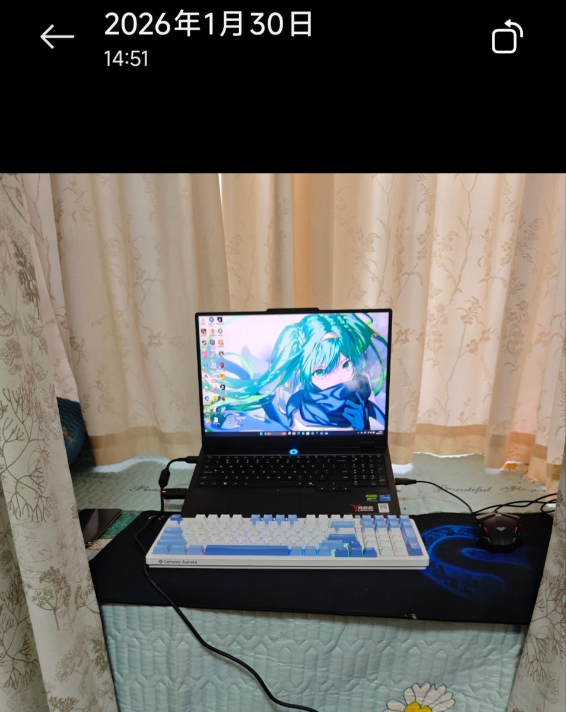

洛书瑶
@luoshuyao
我曾经提过我妈管我学习管得很严的事情，现在我讲一下一件事情就知道有多夸张了。
今年一月底的时候我休7天假回家，刚把电脑打开准备玩大表哥，我妈推门而入，然后说出了一句震惊我十年的话，她叫我少玩点游戏多看看书。听到这句话的一瞬间我感觉我大脑表面的褶皱直接被抚平，恍惚间好像回到了高中最压抑的那段时光，感觉自己已经不在人世了。
我都大学毕业出来工作两年了，让我多看看书是何意味？连上了一个月的班好不容易休息玩一下都要说。
最后这一周还是没怎么玩，因为一直在陪奶奶。现在我的亚瑟还在第一章，星露谷还在第一年的冬天。
